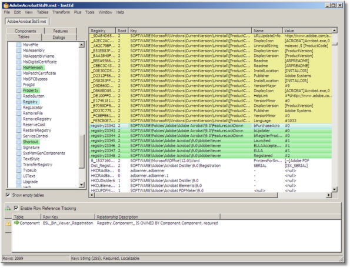

📦 Software-Paketierung (MSI/MST/EXE, Repackaging)
i
Bevor eine Firma eine Anwendung an hunderte PCs verteilt (z.B. per
Intune/SCCM), muss sie "paketiert" werden: in ein Format, das sich
unbeaufsichtigt (silent), nachvollziehbar und rückgängig machbar
installieren lässt - meistens eine MSI.
i
Wie eine MSI-Datei innen aufgebaut ist, wie Transforms (MST) sie anpassen, wie man Installationen per CMD automatisiert - und wie Repackaging (am Beispiel RayPack) funktioniert, wenn kein sauberer Installer existiert.
MSI: Aufbau einer Windows-Installer-Datei
i
Eine MSI ist keine einfache ZIP-Datei - sie ist buchstäblich eine
kleine Datenbank (mit Tabellen wie in Excel), verpackt zusammen
mit den eigentlichen Programmdateien in einem einzigen Container.
i
Eine .msi-Datei ist ein sogenanntes Compound
File (OLE-Speicher) und enthält zwei grundverschiedene
Bereiche:
| Tabelle | Zweck |
|---|---|
| Property | Variablen der Installation (z.B. INSTALLDIR) |
| Directory | Ordnerstruktur (Zielverzeichnis-Baum) |
| Component | Atomare Installations-/Deinstallationseinheit |
| File | Einzelne Dateien, jeweils einer Component zugeordnet |
| Feature | Optionale Installationsbausteine (z.B. "Hilfedateien") |
| Registry | Registry-Einträge, die gesetzt werden sollen |
| InstallExecuteSequence | Reihenfolge der Aktionen bei der (stillen) Installation |
| CustomAction | Zusätzliche eigene Logik (z.B. ein Skript/eine DLL-Funktion) |
Transforms (.mst): Anpassungen ohne die MSI zu ändern
i
Stell dir die Basis-MSI als Kuchenrezept vor, das nie angefasst
wird. Ein Transform ist ein Notizzettel mit Änderungen ("mehr
Zucker, keine Nüsse") - erst beim Backen (Installieren) werden
beide zusammen angewendet.
i
Ein Transform beschreibt Unterschiede zu einer Basis-MSI (z.B. individueller Installationspfad, deaktiviertes Feature, zusätzlicher Registry-Wert) - ohne die Original-MSI zu verändern. So kann eine Firma dieselbe MSI für verschiedene Abteilungen leicht unterschiedlich ausrollen.
Beispiel mit mehreren Transforms (Reihenfolge zählt bei Konflikten):
msiexec /i app.msi TRANSFORMS=basis.mst;abteilung-vertrieb.mst /qn /norestart /l*v install.log
So sieht das in der Praxis im MSI-Editor Orca aus (hier ein Transform auf ein Adobe-Acrobat-Paket, grün markierte Zeilen sind die vom Transform veränderten Registry-Werte):

Stille Installation per CMD automatisieren
MSI-Pakete sind standardisiert - EXE-Installer hängen vom verwendeten Erstellungswerkzeug ab:
| Installer-Typ | Silent-Beispiel |
|---|---|
| MSI (immer gleich) | msiexec /i app.msi /qn /norestart |
| InstallShield-EXE | setup.exe /s /v"/qn" |
| NSIS-EXE | setup.exe /S |
| Inno Setup-EXE | setup.exe /VERYSILENT /NORESTART |
| WiX-Bundle-EXE (kapselt MSI) | setup.exe /quiet /norestart |
Unbekannter Installer? Erst setup.exe /? bzw.
/help probieren, dann typische Parameter der bekannten
Engines durchtesten (oft an Dateieigenschaften oder enthaltenen
Texten/Strings erkennbar) - notfalls mit Verbose-Logging beobachten,
was der Installer tatsächlich tut.
Gängige Exitcodes
i
Nach jeder Installation prüft man in einem Skript automatisch den
Exitcode (%ERRORLEVEL% in CMD, $LASTEXITCODE
in PowerShell), um zu erkennen, ob es geklappt hat - Vorsicht: 0
ist nicht der einzige "Erfolg"-Code!
i
%ERRORLEVEL% in CMD, $LASTEXITCODE
in PowerShell), um zu erkennen, ob es geklappt hat - Vorsicht: 0
ist nicht der einzige "Erfolg"-Code!
| Code | Bedeutung |
|---|---|
| 0 | Erfolgreich (ERROR_SUCCESS) |
| 3010 | Erfolgreich, aber ein Neustart ist noch erforderlich (ERROR_SUCCESS_REBOOT_REQUIRED) - kein Fehler! |
| 1641 | Erfolgreich, Neustart wurde vom Installer bereits eingeleitet |
| 1602 | Installation vom Nutzer abgebrochen (ERROR_INSTALL_USEREXIT) |
| 1603 | Fataler, unspezifischer Installationsfehler (ERROR_INSTALL_FAILURE) - meist muss das Log (/l*v) analysiert werden |
| 1618 | Eine andere Installation läuft bereits gleichzeitig (ERROR_INSTALL_ALREADY_RUNNING) |
| 1619 | Installationspaket konnte nicht geöffnet werden (z.B. beschädigt oder falscher Pfad) |
| 1633 | Diese Plattform/Architektur wird nicht unterstützt (z.B. x86-Paket auf falscher Umgebung) |
| 1638 | Eine andere Version des Produkts ist bereits installiert (ERROR_PRODUCT_VERSION) |
Faustregel für Deployment-Skripte (z.B. in Intune/SCCM): 0
und 3010 als Erfolg werten, bei
3010 zusätzlich einen Neustart einplanen.
Repackaging: wenn es keinen sauberen Installer gibt
i
Manche Software liefert nur einen klickbunten Assistenten ohne
jede Dokumentation. Repackaging macht ein Vorher-Nachher-Foto vom
System und baut aus dem Unterschied eine ganz normale, silent-
fähige MSI.
i
Grundprinzip: Auf einer sauberen Referenzmaschine wird ein Snapshot des Systemzustands erstellt, die Anwendung normal installiert, danach ein zweiter Snapshot erstellt. Aus der Differenz (neue/geänderte Dateien und Registry-Einträge) entsteht eine neue, native MSI - unabhängig vom Format des Original-Installers.
RayPack-Workflow (stellvertretend für Repackaging-Tools)
RayPack unterscheidet bewusst zwischen dem rohen Erfassungsprojekt (.rcp) - dem unbearbeiteten Ergebnis des Snapshot-Vergleichs - und dem daraus abgeleiteten editierbaren Repackaging-Projekt (.rpp), in dem überflüssige/system- spezifische Einträge bereinigt und Anpassungen vorgenommen werden, bevor daraus die fertige, auslieferbare MSI kompiliert wird. So bleiben die Rohdaten der Aufzeichnung erhalten, während am eigentlichen Paket frei gefeilt werden kann.
Vergleichbare Werkzeuge im selben Marktsegment: PACE Suite, AdminStudio Repackager, InstallShield. Wichtige Grenze: Repackaging erfasst nur sichtbare System-Änderungen - komplexe Logik (z.B. Treiber, Dienste mit Sonderkonfiguration) muss oft manuell nachgebildet werden.